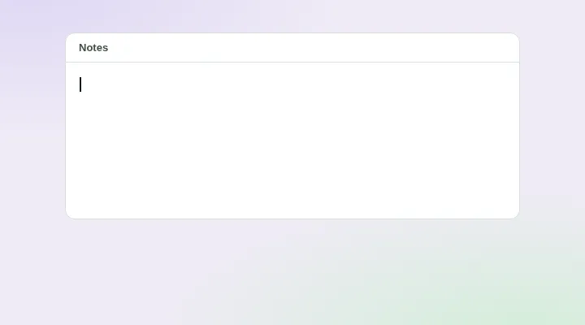
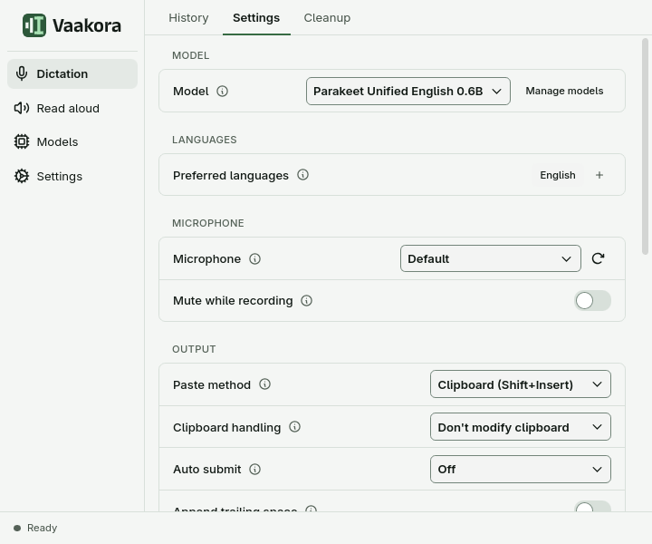

Dictation
Press a configurable shortcut, speak, and the transcript is pasted into the app you are using. Transcription runs on your own computer.


- Shortcut: hold it to record and release to stop, or tap it to toggle recording on and off.
- Silence: filtered with Silero voice activity detection.
- Models: transcription runs locally with Whisper models (with GPU acceleration when available) or Parakeet V3.
- Custom words: offline Parakeet models with a TDT or RNN-T decoder take your custom words as they recognise speech. Live (streaming) models never get them and keep correcting them afterwards.
- Shortcut changes: applied atomically, and a usable dictation shortcut is always kept.
- Paste helpers: the programs that paste dictated text run under a deadline, so a hung helper cannot hold up dictation.
- No overlap: dictation and reading never overlap.
See Models for the speech models and Cleanup to tidy a transcript.